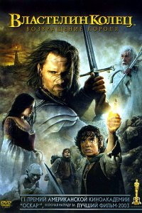

Բարի Գալուստ իմ առաջին էջ
+37498941429
+37491111294
Властелин колец 3: Возвращение Короля (2003)
Завершающая часть эпопеи о Кольце всевластья и героях-хоббитах, спасающих Средиземье. Темный маг Саурон отправляет свои огромные войска к стенам Минас-Тирита. Он находится в предвкушении победы, но в ослеплении не замечает две маленькие фигурки хоббитов, которые движутся к мордорской горе, в которой им необходимо расплавить Кольцо. Повезет ли им?
Сказками Р. Толкина уже несколько десятилетий зачитываются дети и взрослые. Эльфы и другие существа из его фэнтези уже давно стали известны всем. Именно Толкин явился основоположником, «классиком» жанра фэнтези и открыл его миру. Последняя часть кинотрилогии наилучшим образом дополняет любимые книги. Спасители Средиземья сражаются с огромным войском Саурона у крепости Минас-Тирит. Он уже почти празднует победу, но.. кого мы видим там, вдали? Это хоббиты приближаются к мордорской горе, а с ними – Кольцо всевластья.
Год выпуска: 2004
Страна: США
Жанр: Фэнтези, Боевик, Приключения
Перевод: Дублированный
Продолжительность: 04:23:19
Премьера (РФ): 22 января 2004
Режиссер: Питер Джексон
В ролях: Элайджа Вуд, Вигго Мортенсен, Шон Эстин, Иэн МакКеллен, Орландо Блум, Доминик Монахэн, Билли Бойд, Энди Серкис, Миранда Отто, Бернард Хилл